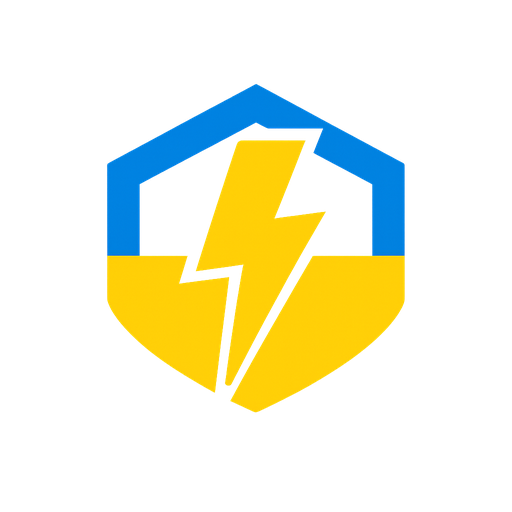

<!doctype html>
<html lang="en">
<meta charset="utf-8">
<title>DTEK Monitor · Social preview source</title>
<style>
  * { box-sizing:border-box; }
  body { margin:0; width:1280px; height:640px; font-family:system-ui,-apple-system,"Segoe UI",sans-serif; background:#eef7fb; color:#10364c; }
  main { width:1280px; height:640px; display:grid; grid-template-columns:735px 545px; overflow:hidden; border-top:12px solid #efc73b; }
  section { padding:52px 0 42px 64px; position:relative; z-index:1; }
  header { display:flex; align-items:center; gap:18px; font-size:24px; font-weight:700; }
  header img { width:68px; height:68px; }
  h1 { font-size:67px; line-height:1.07; letter-spacing:-3px; margin:38px 0 24px; font-weight:800; }
  h1 span { color:#087caa; }
  p { margin:0; font-size:23px; line-height:1.5; color:#37586a; max-width:625px; }
  footer { margin-top:37px; font-size:18px; letter-spacing:.4px; }
  aside { display:flex; flex-direction:column; align-items:center; justify-content:center; background:linear-gradient(150deg,#d6edf7,#c4e1ee); padding:30px 50px 20px 32px; }
  aside img { width:460px; border:1px solid #bed8e4; border-radius:16px; box-shadow:0 20px 55px #15577b26; }
  aside p { font-size:15px; margin-top:20px; color:#315b72; }
</style>
<main>
  <section>
    <header>DTEK Monitor</header>
    <h1>Your DTEK.<br>In <span>Home Assistant.</span></h1>
    <p>Outage schedules. Personal accounts.<br>Meter readings and energy consumption.</p>
    <footer>Ukraine · Independent community integration</footer>
  </section>
  <aside>
    
    <p>github.com/groove-max/ha-dtek-monitor</p>
  </aside>
</main>
</html>
